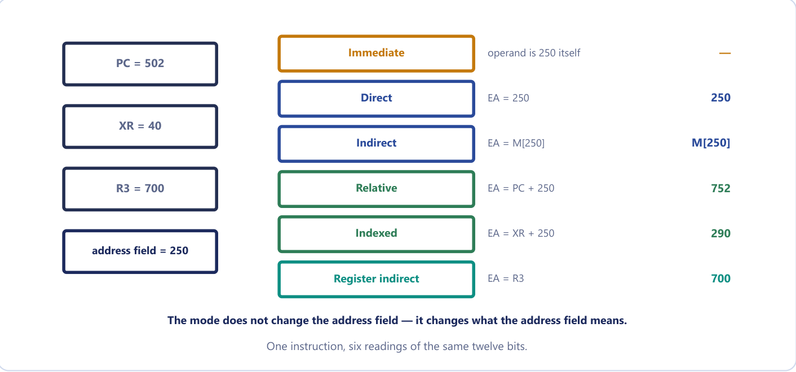
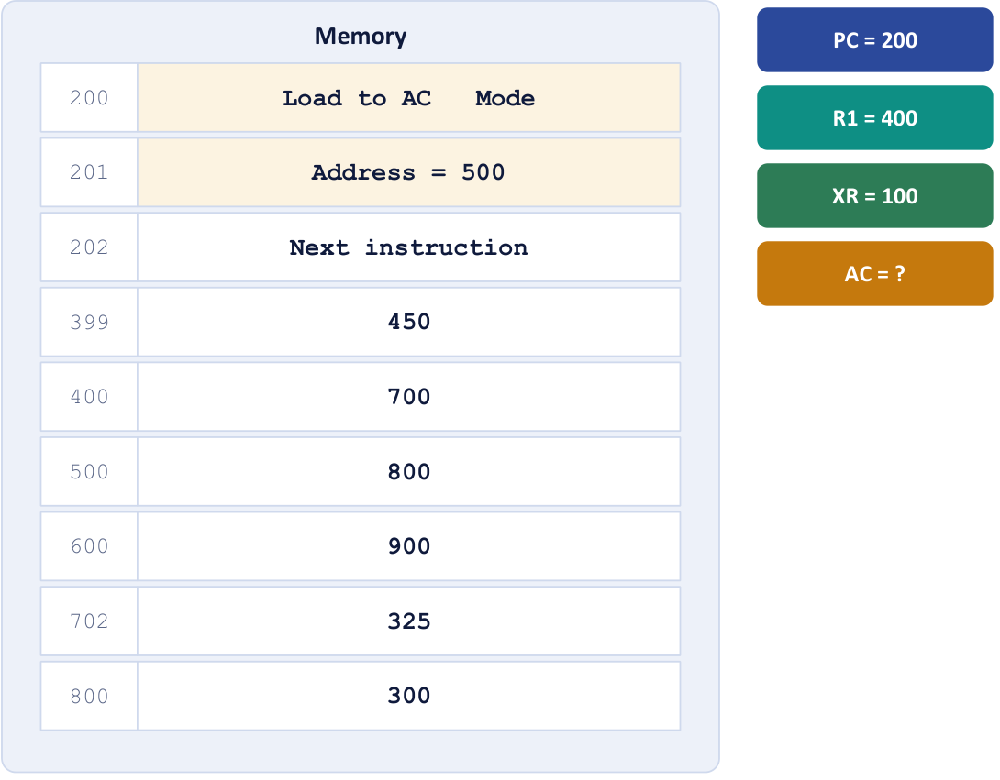

Chapter 15: Addressing Modes and the Instruction Set¶
How an instruction says where its operand is, what operations a processor offers, and how status bits turn comparisons into decisions
Chapter 14 gave the processor somewhere to keep its working values, a bank of registers and a stack. This chapter asks how an instruction reaches its data. The basic computer of Unit 4 knew only two ways: the address field of the instruction was either the address of the operand (direct) or the address of a word that held that address (indirect). That is enough to run a program, but not enough to walk through an array, to hold a local variable, to load a program anywhere in memory and have it still work, or to keep an instruction short when memory is large. A real processor therefore offers a family of addressing modes, each of which is a rule for turning the address field of an instruction into the location of the operand.
The chapter has two halves. The first half takes the ten addressing modes one at a time, shows one instruction under every mode in a worked table, and builds a reliable method for calculating effective addresses; this is the question that appears in almost every examination, and it is pure method. The second half looks at what the processor can be told to do: the three families of instruction (data transfer, data manipulation and program control), the four status bits C, S, Z and V that let a program make decisions, and the subroutine call and interrupt mechanisms that depend on the stack of Chapter 14.
What you will learn
- Define the effective address and explain why addressing modes exist.
- Apply the rule for each of the ten addressing modes, and state which need no memory access for the operand.
- Calculate effective addresses and operands for a two-word instruction, using the updated PC for relative mode.
- Explain the roles of relative, indexed and base-register addressing, and why relative addressing makes code relocatable.
- List the data-transfer, arithmetic, logical, shift and program-control instructions and use AND, OR and XOR with a mask.
- Set and read the status bits C, S, Z and V after an addition or a subtraction and choose the right conditional branch, and describe CALL, RET and the program interrupt.
15.1 Why addressing modes exist¶
An instruction is a group of bits with fields. The most common fields are an operation code, a mode field and an address field. The way an operand is selected during program execution depends on the addressing mode. The addressing mode specifies a rule for interpreting or modifying the address field of the instruction before the operand is actually referenced, and the address that finally results, the memory address (or the register) that holds the operand, is called the effective address (EA). Computers use addressing modes for two purposes: to give programming flexibility and to reduce the number of bits in the address field.
Four needs lie behind this.
- Pointers. A variable whose value is an address needs register-indirect and indirect modes.
- Arrays and loops. Stepping through consecutive elements without rewriting the instruction needs indexed and autoincrement modes.
- Relocatable code. An address expressed relative to the PC, or to a base register, lets a program run wherever it happens to be loaded.
- Compact instructions. A register number needs only 3 to 5 bits; a full memory address needs 16 to 32. Register modes shrink the instruction.
A useful analogy is a postal address on an envelope. "Deliver to 42 Nehru Road" is direct. "Deliver to whoever lives at the address written on the card at 42" is indirect. "Deliver to the house five doors along from where you are standing" is relative. "Deliver to the seventh house on the street whose start is written in your notebook" is indexed. The envelope has the same size and the same field width in every case, but the destination is completely different; the mode bits tell the postman which sentence to read. The mode field does not change the address field; it changes what the address field means.
To the programmer the same load instruction written with different modes looks like several different instructions. To the hardware there is a single load operation and a mode field that changes how the address is computed before the load happens. That separation of operation (in the opcode) from address computation (in the mode) is why a CPU with 8 modes and 50 operations offers 400 combinations without needing 400 opcodes.
15.2 The ten addressing modes¶
We take the modes in the order in which the operand moves further from the instruction: first those where the operand is in the instruction or in a register, then those where it is in memory.
Implied mode. The operand is specified implicitly in the definition of the instruction; there is no address field at all. CMA (complement the accumulator) operates on AC, and every zero-address stack instruction such as ADD operates on the top of the stack. These are the register-reference and stack instructions.
Immediate mode. The operand itself is in the instruction, in place of an address. The address field is the operand, a constant carried inside the instruction. There is no effective address and no memory reference for the operand. It is used for constants and for initial values such as counters.
Register mode. The operand is in a processor register named by the field. There is no memory address, so no memory access; it is the fastest mode, and the field needs only a few bits.
Register-indirect mode. The named register holds the address of the operand: EA = the contents of the register. This is how a pointer held in a register is used, and the instruction needs only a register number instead of a full address.
Autoincrement and autodecrement modes. These are register-indirect with a side effect. In autoincrement the register supplies the address and is then incremented; in autodecrement it is decremented first and then supplies the address. They exist because stepping through an array needs the pointer bumped after every access; rather than write a separate increment instruction, the addressing mode does it for free, saving one instruction in the innermost loop of every array traversal. They are also how a stack is addressed (a push is autodecrement, a pop is autoincrement).
Direct (absolute) mode. The address field is the effective address: EA = the address field. It is used for a simple fixed variable.
Indirect mode. The address field gives the address of a memory word that holds the effective address: EA = M[address field]. It is used for pointers held in memory, and it costs two memory accesses for the operand, one to read the pointer and one to read the operand it points to, which is why indirect addressing is slower and a compiler avoids it in a tight loop.
Relative mode. The contents of the program counter are added to the address field: EA = PC + address field, where the address field is a signed number (a displacement). It gives short branches, and it makes code position-independent.
Indexed mode. The contents of an index register XR are added to the address field: EA = XR + address field. The address field holds the start of an array and the register holds the element number.
Base-register mode. The contents of a base register BR are added to the address field: EA = BR + address field. The register holds the start of a program or data segment and the address field holds a displacement inside it; it is used for relocating programs and accessing segments.
| Mode | Rule for the operand or EA | Memory reads for the operand | Typical use |
|---|---|---|---|
| Implied | operand implicit in the opcode | 0 | accumulator and stack instructions |
| Immediate | operand = address field | 0 | constants, initial values |
| Register | operand is in the named register | 0 | fast temporaries |
| Register indirect | EA = contents of the register | 1 | pointers held in registers |
| Autoincrement or autodecrement | as register indirect, then (or first) the register is stepped | 1 | arrays, tables, stacks |
| Direct | EA = address field | 1 | simple variables |
| Indirect | EA = M[address field] | 2 | pointers held in memory |
| Relative | EA = PC + address field | 1 | branches, relocatable code |
| Indexed | EA = XR + address field | 1 | arrays: field = start, XR = index |
| Base register | EA = BR + address field | 1 | relocating programs |
Figure 15.1 summarises six of the modes on one instruction whose address field is 250. The mode does not change the address field, only its meaning: with PC = 502, XR = 40 and R3 = 700, the same twelve bits give 250 (direct), M[250] (indirect), 752 (relative), 290 (indexed) and 700 (register indirect), while for immediate the operand is the 250 itself and there is no effective address.

Indexed against base-register
Both modes compute EA = register + address field, and the hardware addition is identical. The difference is in how they are used. In indexed addressing the address field holds the base of the array and the register varies, holding the element number or displacement. In base-register addressing the register holds the fixed base of a program or segment and the address field holds a displacement within it. Same adder, opposite roles.
Immediate against direct
The single most common slip. Immediate means the operand is the number in the instruction: with LD #500 the value 500 is loaded into AC and no memory is read. Direct means the number is an address: LD 500 goes to memory and loads M[500]. The same "500" is written in the instruction, with completely different meanings. A quick test: if there is a #, or the mode says immediate, the value is already in your hand.
15.3 One instruction under every mode¶
The course text's standard worked example runs one instruction under each mode, and it is the model for all effective-address questions. A two-word "load to AC" instruction is stored at addresses 200 and 201. The first word (address 200) holds the operation code and the mode; the second word (address 201) holds the address field, 500. The next instruction is at 202. The processor register R1 holds 400 and the index register XR holds 100. Memory holds the following words (Figure 15.2).

The instruction loads the accumulator (AC ← operand). We tabulate the effective address and the operand under each mode.
Example 15.1: One instruction under nine modes
Problem. Using the memory contents M[399] = 450, M[400] = 700, M[500] = 800, M[600] = 900, M[702] = 325, M[800] = 300, find the effective address and the value that ends up in AC under each addressing mode. R1 = 400, XR = 100, address field = 500.
Setup. The instruction occupies locations 200 and 201, and it is fetched in full before the operand is calculated. During fetch PC is incremented past both words, so by the time the address field is used, PC = 202.
Working.
| Mode | How the EA is formed | EA | AC after loading |
|---|---|---|---|
| Direct | EA = address field = 500 | 500 | M[500] = 800 |
| Immediate | operand is at location 201 itself (the address field) | 201 | 500 |
| Indirect | EA = M[500] = 800 | 800 | M[800] = 300 |
| Relative | EA = PC + 500 = 202 + 500 | 702 | M[702] = 325 |
| Indexed | EA = XR + 500 = 100 + 500 | 600 | M[600] = 900 |
| Register | the operand is R1 itself | — | 400 |
| Register indirect | EA = R1 = 400 | 400 | M[400] = 700 |
| Autoincrement | EA = R1 = 400, then R1 ← 401 | 400 | M[400] = 700 |
| Autodecrement | R1 ← 399, then EA = 399 | 399 | M[399] = 450 |
Answer. The EA and AC pairs are 500/800, 201/500, 800/300, 702/325, 600/900, —/400, 400/700, 400/700 and 399/450.
Two rows catch people out. In relative mode the PC has already been incremented past the two-word instruction, so EA = 500 + 202 = 702, not 500 + 200. In autodecrement mode R1 is decremented before the access, so the EA is 399, not 400, whereas in autoincrement it is incremented after it.
Relative mode uses the updated PC
By the time the address field is used, PC has already been incremented past the instruction during fetch. A two-word instruction at 200 and 201 sees PC = 202, so relative EA = 202 + field, not 200 + field. This single detail decides most addressing-mode questions.
The assembly language of a machine has to say which mode an instruction uses, since the mnemonic LD alone cannot say where the operand is. Different assemblers use different symbols, but the course text's convention for the load instruction is the following. The punctuation is the mode.
| Mode | Assembly convention | Register transfer |
|---|---|---|
| Direct address | LD ADR |
AC ← M[ADR] |
| Indirect address | LD @ADR |
AC ← M[M[ADR]] |
| Relative address | LD $ADR |
AC ← M[PC + ADR] |
| Immediate operand | LD #NBR |
AC ← NBR |
| Index addressing | LD ADR(X) |
AC ← M[ADR + XR] |
| Register | LD R1 |
AC ← R1 |
| Register indirect | LD (R1) |
AC ← M[R1] |
| Autoincrement | LD (R1)+ |
AC ← M[R1], R1 ← R1 + 1 |
@ means indirect, $ means relative to PC, # means the operand itself, (R1) means that the address is in R1, ADR(X) means indexed and a trailing + means autoincrement. When asked to write the register transfer for a mode, always show the full expression including the brackets: AC ← M[ADR + XR], not "AC gets ADR plus XR". Note too that LD @ADR needs two memory accesses, one to read the pointer at ADR and one to read the operand it points to.
15.4 Calculating effective addresses: a method¶
A question about effective addresses looks long but is always the same method. Four lines of setup, then one line per mode. Do the setup even when you think you can do it in your head.
- Write down the four numbers. The address field value, the PC, the index register, and any general register the question mentions. Everything else is decoration.
- Decide what PC is. If the question tells you PC, use exactly that number. If it does not, PC is the address of the next instruction: for a two-word instruction starting at address a, that is a + 2.
- Apply one rule per mode, and say which. Write "Relative: EA = PC + field = 242 + 180 = 422". The rule earns a mark even when the arithmetic slips.
- Sanity-check immediate. There is no memory operand. Answer "the operand is 180 itself; if an address is required it is 241, the location of the address field".
Example 15.2: Effective address in five modes
Problem. A two-word instruction starts at address 240. The address field is located at 241 and contains 180. The program counter holds 242 (the address of the next instruction), the index register XR holds 25 and R2 holds 400. Find the effective address under (i) direct, (ii) immediate, (iii) relative, (iv) indexed, (v) register indirect.
Setup. Address field = 180, PC = 242, XR = 25, R2 = 400; the address field itself lives at 241.
Working.
- Direct: EA = the address field = 180. One memory read fetches the operand.
- Immediate: the operand is the value 180, carried inside the instruction. There is no memory operand; if an address must be quoted it is 241, the word holding the operand.
- Relative: EA = PC + address field = 242 + 180 = 422.
- Indexed: EA = XR + address field = 25 + 180 = 205.
- Register indirect: EA = contents of R2 = 400. The address field is not used at all.
Answer. 180; 241 (operand 180); 422; 205; 400.
The mark most often lost here is to use 240 instead of 242 for relative addressing. The question hands you PC = 242, and even says why: the instruction occupies two words, 240 and 241, so the next one starts at 242.
Example 15.3: The same question with a twist in the data
Problem. An instruction is stored at location 100 with its address field at location 101. The address field has the value 500. PC has the value 100. The content of processor register R1 is 200. Evaluate the effective address if the mode is (i) direct, (ii) relative, (iii) indirect, (iv) register indirect, (v) immediate. All values are decimal.
Working. Address field = 500, located at 101; PC = 100 as given; R1 = 200.
- Direct: EA = 500.
- Relative: EA = PC + 500 = 100 + 500 = 600, using the value of PC the question supplies.
- Indirect: EA = M[500]. The question does not give the contents of 500, so the answer is stated as M[500], and the operand needs two memory reads.
- Register indirect: EA = contents of R1 = 200.
- Immediate: no memory operand; the operand is 500, and the address of the operand field is 101.
Answer. 500; 600; M[500]; 200; operand 500 (at 101).
This paper says PC = 100, the address of the instruction rather than of the next one. Use the number you are given and add one line: "taking PC as the given value 100; had PC been advanced past the two-word instruction it would be 102 and EA = 602". That sentence protects the mark either way.
Example 15.4: A new memory map
Problem. An instruction at addresses 300 and 301 has address field 250. PC = 300 (the address of the instruction), R2 = 700 and XR = 40. M[250] = 620, M[290] = 55, M[302] = 12, M[552] = 88, M[700] = 90. Find the EA and the operand for direct, indirect, relative, indexed and register-indirect addressing.
Working. After the two words are fetched, PC = 302 during execution.
| Mode | EA | Operand |
|---|---|---|
| Direct | 250 | M[250] = 620 |
| Indirect | M[250] = 620 | M[620] (not given) |
| Relative | 302 + 250 = 552 | M[552] = 88 |
| Indexed | 40 + 250 = 290 | M[290] = 55 |
| Register indirect | R2 = 700 | M[700] = 90 |
Answer. The EAs are 250, 620, 552, 290 and 700; the operands 620, M[620], 88, 55 and 90. The word M[302] = 12 is a distractor: it is the contents of PC, not an operand.
Example 15.5: Effective address with decimal values and a register
Problem. A two-word instruction is stored at 350 and its address field, at 351, holds 620. PC holds 352, XR holds 90 and R1 holds 400. Find the effective address for (i) direct, (ii) immediate, (iii) relative, (iv) indexed, (v) register indirect.
Working. (i) EA = 620. (ii) The operand is 620 and it sits at 351. (iii) EA = PC + field = 352 + 620 = 972. (iv) EA = XR + field = 90 + 620 = 710. (v) EA = R1 = 400.
Answer. 620; operand 620 (at 351); 972; 710; 400. Relative mode uses the value of PC after the whole instruction has been fetched, 352, and not 350.
Example 15.6: Walking through an array with autoincrement
Problem. R1 = 400 and memory holds M[400] = 700, M[401] = 12, M[402] = 34. The CPU executes three consecutive LD (R1)+ instructions. What is loaded each time, and what is R1 at the end?
Working. Autoincrement means use R1 as the address, then add 1 to R1. Each instruction reads the current element and advances the pointer; no address arithmetic is written in the instruction.
| Step | R1 before | EA = (R1) | Value loaded | R1 after |
|---|---|---|---|---|
1st LD (R1)+ |
400 | 400 | M[400] = 700 | 401 |
| 2nd | 401 | 401 | M[401] = 12 | 402 |
| 3rd | 402 | 402 | M[402] = 34 | 403 |
Answer. The loads return 700, 12 and 34; R1 finishes at 403. One instruction, reused in a loop, sweeps the whole array, which is why autoincrement is the natural way to walk an array or a string. With autodecrement the register is decremented first, so LD -(R1) with R1 = 400 would load M[399] and leave R1 = 399, which is how the array would be walked backwards or a stack accessed.
Example 15.7: Counting memory accesses
Problem. How many memory accesses does each of direct, indirect and immediate addressing need in total, counting the instruction fetch? (Assume a one-word instruction.)
Working. Immediate: 1, the instruction itself, which already contains the operand (a two-word instruction costs two reads to fetch). Direct: 2, the fetch and then the operand. Indirect: 3, the fetch, the pointer and then the operand.
Answer. 1, 2 and 3.
15.5 Relative, indexed and base-register addressing in practice¶
Three of the modes deserve a closer look, because they are the ones that make loops, arrays and relocatable programs work.
Relative addressing¶
In relative mode the address field is a signed displacement added to the (updated) PC. Because nearly every branch goes to somewhere nearby, a short signed offset is enough, and the instruction can be small. A negative offset makes the branch go backwards, to an instruction the program has already passed, and that is exactly what the bottom of a loop needs. The deeper advantage is that the distance from the branch instruction to its target does not change wherever the program is loaded, so the same code works at any address without alteration: it is position-independent or relocatable code.
Example 15.8: Finding a relative address field, and relocation
Problem. A two-word relative-mode branch instruction is stored at addresses 750 and 751 (decimal) and must branch to address 500. (i) What value must the address field hold? (ii) Write it as a 12-bit two's complement number. (iii) If the program is loaded 1000 words higher, does the field change?
Working. (i) After the fetch PC = 752, and EA = PC + field, so field = 500 − 752 = −252.
(ii) 252 = 0000 1111 1100; complement and add 1: 1111 0000 0100, which is F04 in hexadecimal (3844 unsigned, which is 4096 − 252).
(iii) The instruction moves to 1750, PC = 1752 and the target to 1500, and 1500 − 1752 = −252 again.
Answer. (i) −252. (ii) 1111 0000 0100. (iii) No, which is exactly why relative addressing gives relocatable code.
Example 15.9: A backward branch
Problem. An instruction occupies locations 350 and 351 and its address field holds −6. (a) What is the effective address in relative mode, and why would a programmer want a negative offset? (b) In a 12-bit address field, how is −6 stored?
Working. (a) The instruction is two words long, so after it has been fetched PC = 352. EA = PC + field = 352 + (−6) = 346. A negative offset sends the branch backwards, as the bottom of a loop requires. (b) 6 = 0000 0000 0110; the 2's complement is 1111 1111 1010 = FFA hexadecimal.
Answer. (a) EA = 346. (b) FFA.
Indexed and base-register addressing¶
In indexed addressing the address field holds the start of an array and XR holds the index. To sum an array the loop body can use the same instruction on every pass, LD ADR(X), and merely add 1 to XR between passes. In base-register addressing the roles are exchanged: the base register BR holds the start of the program or data segment, assigned by the operating system when the program is loaded, and the address field is the fixed displacement within it. This is also how local variables are reached in a stack frame. Moving a whole program therefore needs only a change to BR, not to any instruction.
15.6 The instruction set: three families¶
Although instruction sets differ from machine to machine, the operations fall into the same three groups: data transfer, data manipulation and program control. A machine that lacked any one of the three could not run a program at all: it must move data, compute with it and decide what to do next. That is why the instruction sets of wildly different CPUs look so similar once they are grouped this way.
A machine instruction is not a microoperation. The list of data-manipulation instructions looks like the list of microoperations from Unit 4, but each instruction must go through the whole fetch, decode and execute cycle, whereas a microoperation is one clock pulse inside that cycle.
Data transfer instructions¶
These move data from one place to another without changing it. They change where a value is, not what it is.
| Name | Mnemonic |
|---|---|
| Load (memory → register) | LD |
| Store (register → memory) | ST |
| Move (register → register) | MOV |
| Exchange (swap two) | XCH |
| Input and output (device) | IN, OUT |
| Push and pop (stack) | PUSH, POP |
The same LD can be written with each addressing mode, as we saw in Section 15.3.
Data manipulation instructions¶
These change data, and fall into three types: arithmetic, logical and bit manipulation, and shifts.
| Arithmetic | Logical and bit manipulation |
|---|---|
increment, decrement: INC, DEC |
clear, complement: CLR, COM |
add, subtract: ADD, SUB |
AND, OR, XOR |
multiply, divide: MUL, DIV |
clear, set, complement carry: CLRC, SETC, COMC |
add with carry, subtract with borrow: ADC, SBB |
enable, disable interrupt: EI, DI |
negate (2's complement): NEG |
The logical instructions are used with a mask: AND with a mask clears the chosen bits, OR with a mask sets them, and XOR with a mask complements them. The mask has 1s in the positions to be affected for OR and XOR, and 0s in the positions to be cleared for AND.
Example 15.10: Masks
Problem. An 8-bit register holds 1011 0110. Show the result of (a) AND, (b) OR, (c) XOR with the mask 0000 1111.
Working. Apply the operation bit by bit.
R 1011 0110
mask 0000 1111
AND 0000 0110 (high nibble cleared)
OR 1011 1111 (low nibble set)
XOR 1011 1001 (low nibble complemented)
Answer. (a) 0000 0110, (b) 1011 1111, (c) 1011 1001.
The shift instructions differ in what enters the vacated bit.
| Name | Mnemonic | What enters the vacated bit | 1011 0010 shifted once |
|---|---|---|---|
| Logical shift right | SHR |
0 enters on the left | 0101 1001 |
| Logical shift left | SHL |
0 enters on the right | 0110 0100 |
| Arithmetic shift right | SHRA |
the sign bit is copied (sign preserved, value halved) | 1101 1001 |
| Arithmetic shift left | SHLA |
0 enters; overflow if the sign bit changes | 0110 0100 (overflow) |
| Rotate right, left | ROR, ROL |
the bit leaving one end enters the other | 0101 1001, 0110 0101 |
| Rotate right through carry | RORC |
carry enters; the bit leaving goes to carry | with C = 0: 0101 1001, C = 0 |
Example 15.11: Shifts on an 8-bit register
Problem. R = 1001 1010 and the carry C = 1. Give R after one (i) logical shift right, (ii) arithmetic shift right, (iii) arithmetic shift left, (iv) rotate left, (v) rotate right through carry.
Working. (i) A 0 enters on the left: 0100 1101. (ii) The sign bit 1 is copied: 1100 1101, which is −102 becoming −51. (iii) A 0 enters on the right: 0011 0100; the sign changed from 1 to 0, so there is overflow. (iv) The leaving 1 re-enters on the right: 0011 0101. (v) C = 1 enters on the left and the leaving 0 goes to C: 1100 1101, C = 0.
Answer. 0100 1101; 1100 1101; 0011 0100 (V = 1); 0011 0101; 1100 1101 with C = 0.
15.7 Program control and the status bits¶
Data transfer and data manipulation instructions leave the PC to advance normally. Program control instructions change the value of the PC, and that changes the flow of the program. They are the only instructions that write to the PC, and they are what make a program more than a list.
| Name | Mnemonic | What it does |
|---|---|---|
| Branch | BR |
jump to the given address |
| Jump | JMP |
jump to the given address |
| Skip | SKP |
skip the next instruction if a condition holds |
| Call | CALL |
call a subroutine, saving the return address |
| Return | RET |
return, restoring the saved address into PC |
| Compare | CMP |
subtract, discard the result, keep the status bits |
| Test | TST |
AND, discard the result, keep the status bits |
CMP and TST are the odd ones out: CMP A, B performs A − B, throws the answer away and keeps only the status bits; TST performs an AND with the same effect. They run the operation purely to set the status bits, so that the next branch can test them. A program does not store the difference, because it wants the answer to a question rather than a new value, and storing the subtraction would destroy a register for nothing. (Some books list CMP under arithmetic because it subtracts, others under program control because it exists for the branch; say which you mean.)
The four status bits¶
Four flip-flops sit at the output of the ALU and are set by each arithmetic operation. For an 8-bit operation with carries C7 (into the sign bit) and C8 (out of it) and output bits F7 down to F0, they are defined as follows.
| Bit | Name | Set to 1 when | Logic |
|---|---|---|---|
| C | Carry | the end carry out of the ALU is 1 | \(C = C_8\) |
| S | Sign | the highest-order bit of the result is 1 | \(S = F_7\) |
| Z | Zero | every bit of the result is 0 | \(Z = 1\) if \(F_7 \ldots F_0\) are all 0 |
| V | Overflow | the signed result does not fit in the word | \(V = C_7 \oplus C_8\) |
C matters for unsigned numbers, V for signed ones. The same addition can set C and not V, or V and not C; the hardware sets both and the program decides which is relevant by choosing which branch instruction to write. Overflow does not mean "the carry bit is set": adding two positive numbers can overflow with C = 0, and adding two negatives can set C = 1 with no overflow at all.
Subtraction A − B is carried out as A + B' + 1 (B' is the 1's complement of B). So for unsigned numbers C = 1 means A ≥ B (there was no borrow) and C = 0 means A < B. For signed numbers, A < B exactly when S ⊕ V = 1. Z = 1 means A = B in both cases.
Conditional branches¶
A conditional branch always takes two instructions: one sets the flags and the next reads them. CMP A, B subtracts and keeps the flags; BZ label branches if Z = 1, that is if A = B. The branch mnemonics test the flags as follows.
| Mnemonic | Branch condition | Tested |
|---|---|---|
BZ, BNZ |
zero, not zero | Z = 1, Z = 0 |
BC, BNC |
carry, no carry | C = 1, C = 0 |
BP, BM |
plus, minus | S = 0, S = 1 |
BV, BNV |
overflow, no overflow | V = 1, V = 0 |
| Mnemonic | After A − B | Tested |
|---|---|---|
BHI |
A > B unsigned | C = 1 and Z = 0 |
BLO |
A < B unsigned | C = 0 |
BGT |
A > B signed | \((S \oplus V) + Z = 0\) |
BLT |
A < B signed | \(S \oplus V = 1\) |
RISC-V does it differently: it has no status register at all. Its beq, bne, blt and bge instructions compare two registers and branch in one instruction, which makes the pipeline easier (Chapter 16).
Example 15.12: Status bits after a subtraction
Problem. Two 8-bit values A = 1111 0000 and B = 0001 0100 are compared by A − B. Give the result and the C, S, Z and V bits. Interpret the comparison for unsigned and for signed numbers.
Working. Subtract by adding the 2's complement: B' + 1 = 1110 1100. Then
1111 0000
+ 1110 1100
= 1 1101 1100
The end carry C8 = 1, and the carry into the sign bit C7 = 1.
So C = C8 = 1, S = F7 = 1, Z = 0 (the result is not zero) and V = C7 ⊕ C8 = 0.
Check. Unsigned: 240 − 20 = 220 = 1101 1100, and C = 1 means no borrow, so A > B (Z = 0). Signed: −16 − 20 = −36 = 1101 1100, with no overflow; S ⊕ V = 1 means A < B.
Answer. Result 1101 1100; C = 1, S = 1, Z = 0, V = 0. For unsigned numbers A > B (BHI is taken); for signed numbers A < B (BLT is taken). The same bit pattern gives opposite answers, which is why there are separate unsigned and signed branches.
Example 15.13: Status bits after an addition
Problem. The 8-bit numbers 0111 0000 and 0101 0000 are added. Give C, S, Z and V, and say whether the result is correct as an unsigned sum and as a signed sum.
Working. 0111 0000 + 0101 0000 = 1100 0000, with no carry out of bit 7. In decimal, 112 + 80 = 192. As unsigned, 192 fits in 8 bits, so the answer is correct; C = 0 confirms it. As signed, 192 exceeds the range −128 to +127, and the pattern 1100 0000 reads as −64: wrong. The carry into bit 7 is 1 (from 1 + 1 in bit 6) and the carry out is 0; they differ, so V = 1.
Answer. C = 0, S = 1, Z = 0, V = 1. The unsigned sum 192 is correct; the signed sum is wrong, and V = 1 says so.
Example 15.14: Another addition
Problem. Add the 8-bit numbers 1000 0001 and 1000 0010 and give C, S, Z and V. Is the signed result correct?
Working. 1000 0001 + 1000 0010 = 1 0000 0011. The ninth bit is the carry out, so C = 1; the 8-bit result is 0000 0011, so S = 0 and Z = 0. The carry into bit 7 is 0 and the carry out is 1, so V = 1. As signed numbers this is (−127) + (−126) = −253, far below −128.
Answer. C = 1, S = 0, Z = 0, V = 1. The signed result is wrong and V = 1 says so.
Subroutine call and return¶
CALL saves the return address and loads the subroutine address into PC; RET restores it. Saving the return address on a stack is the best choice, because it allows nested and recursive calls automatically.
CALL: SP ← SP - 1, M[SP] ← PC, PC ← EA
RET: PC ← M[SP], SP ← SP + 1
Compare this with BSA in the basic computer. BSA wrote the return address into the first word of the subroutine, so a subroutine could not call itself, or be called again before it returned. A stack CALL pushes the return address instead, so ten nested calls simply leave ten addresses on the stack, and the returns pop them in reverse order. That single change turned subroutines into recursive functions.
Example 15.15: Subroutine call and return through a memory stack
Problem. A one-word instruction CALL 5000 is stored at address 2000. The memory stack grows downwards and SP = 3000 before the call. Give PC, SP and the top of the stack (i) just before execution of CALL, (ii) after CALL, (iii) after the RET at the end of the subroutine. Why is a stack better than saving the return address in a fixed location?
Working. (i) Fetch has already incremented PC: PC = 2001, SP = 3000, and the top of the stack is whatever M[3000] held before. (ii) CALL: SP ← SP − 1 = 2999; M[2999] ← PC = 2001; PC ← 5000. (iii) RET: PC ← M[SP] = 2001; SP ← SP + 1 = 3000.
Answer. (i) PC = 2001, SP = 3000. (ii) PC = 5000, SP = 2999, M[2999] = 2001. (iii) PC = 2001, SP = 3000. A stack lets a subroutine call another (or itself): each call pushes a new return address above the previous one, and the returns pop them in reverse order. A fixed location (as in BSA) would be overwritten by a nested call. The mistake to avoid is saving 2000 instead of 2001: the return would execute CALL again, for ever.
15.8 The program interrupt¶
A program interrupt transfers control from the running program to a service routine because of an external or internal request, and returns when the service is complete. Unlike a subroutine call, it is not requested by the program, it can happen at any time, and the whole processor state must be saved, not just the PC. The state is collected in the program status word (PSW): the status bits, the interrupt-enable bit and the CPU mode. Many CPUs run the operating system in supervisor (kernel) mode and ordinary programs in user mode; an interrupt switches to supervisor mode.
| Type | Cause | Example |
|---|---|---|
| External | I/O devices, timers, power | a key press, a disk transfer finished, a timer tick |
| Internal (trap) | an invalid or erroneous use of an instruction or data | division by zero, overflow, invalid opcode, a stack error, a protection violation |
| Software | a special call instruction | a supervisor call to request an operating-system service |
At the end of the current instruction, if interrupts are enabled and a request is pending, the CPU (1) pushes the PC and the PSW onto the stack; (2) loads the PC with the address of the service routine (from a fixed location or a vector) and a new PSW; (3) runs the routine; and (4) the return-from-interrupt instruction pops the PSW and the PC. Internal interrupts are synchronous (the same program with the same data interrupts at the same place); external ones are asynchronous.
| Subroutine call | Program interrupt |
|---|---|
| initiated by an instruction in the program | initiated by an external or internal signal, not by the program |
| happens at a known, fixed point | can happen after any instruction (asynchronous for external) |
| the address of the subroutine is in the instruction | the address of the service routine comes from hardware (a fixed location or a vector) |
| only the PC (the return address) is saved | the PC and the PSW (status bits, mode, interrupt enable) are saved |
15.9 Summary¶
Key points
- An addressing mode is a rule that turns the address field into the effective address (EA); it changes what the address field means, not its width. Modes give pointers, arrays, relocatable code and short instructions.
- Implied, immediate and register modes need no memory access for the operand; register indirect, direct, relative, indexed and base-register need one; indirect needs two.
- EA rules: direct = field; indirect = M[field]; relative = PC + field; indexed = XR + field; base = BR + field; register indirect = R. Autoincrement uses R then adds 1; autodecrement subtracts 1 first.
- Relative mode uses the updated PC (the address of the next instruction): a two-word instruction at 200 sees PC = 202. Relative addressing makes code relocatable.
- Instructions fall into data transfer, data manipulation (arithmetic, logical and bit, shift) and program control. AND with a mask clears, OR sets, XOR complements.
- Status bits: C = C8, S = F7, Z = all-zero result, V = C7 ⊕ C8. After A − B, unsigned A ≥ B iff C = 1; signed A < B iff S ⊕ V = 1.
- CALL pushes the updated PC and loads the subroutine address; RET pops. A program interrupt is not requested by the program and saves the PC and the PSW.
| Mode | EA | Operand (Mano's example) |
|---|---|---|
| Immediate | none | 500 |
| Direct | ADR = 500 | 800 |
| Indirect | M[ADR] = 800 | 300 |
| Relative | PC + ADR = 202 + 500 = 702 | 325 |
| Indexed | XR + ADR = 600 | 900 |
| Register | none | 400 |
| Register indirect | R1 = 400 | 700 |
| Autoincrement | R1 = 400, then R1 ← 401 | 700 |
| Autodecrement | R1 ← 399, EA = 399 | 450 |
15.10 Exercises¶
Exercise 15.1. Define in one line each, with one use: implied, immediate, register-indirect, autoincrement and relative addressing.
Answer
Implied: the operand is implicit in the opcode (CMA uses AC; stack ADD uses the stack); used in accumulator and stack instructions. Immediate: the address field is the operand; used for constants. Register indirect: the named register holds the operand's address, EA = (R); used for pointers. Autoincrement: register indirect, then the register is incremented; used for stepping through arrays. Relative: EA = PC + address field; used for branches and relocatable code.
Exercise 15.2. A two-word load instruction is stored at addresses 250 and 251; the address field is 600 and PC = 252. M[600] = 750, M[750] = 500, M[752] = 210, M[900] = 640, R1 = 900 and XR = 150. Give the EA and the operand for direct, immediate, indirect, relative, indexed, register and register-indirect modes.
Answer
Direct: EA = 600, operand M[600] = 750. Immediate: operand = 600 (no EA). Indirect: EA = M[600] = 750, operand M[750] = 500. Relative: EA = 252 + 600 = 852, operand M[852] (not given). Indexed: EA = 150 + 600 = 750, operand M[750] = 500. Register: operand = R1 = 900. Register indirect: EA = R1 = 900, operand M[900] = 640.
Exercise 15.3. A pointer register R2 = 500 and memory holds M[500] = 8, M[501] = 13, M[502] = 21. The instruction LOAD (R2)+ is executed three times in a row. For each, give the EA, the value loaded and R2 afterwards, and explain in one sentence why the mode suits an array.
Answer
First: EA = 500, loads 8, R2 = 501. Second: EA = 501, loads 13, R2 = 502. Third: EA = 502, loads 21, R2 = 503. The register advances after each use, so one instruction reused in a loop walks the whole array with no address arithmetic.
Exercise 15.4. An instruction occupies locations 300 and 301 (two words); its address field, at 301, is 400. PC = 302, XR = 100, R1 = 900 and M[400] = 700. Give the EA for direct, indirect, relative, indexed, register indirect and immediate addressing.
Answer
Direct 400; indirect M[400] = 700; relative 302 + 400 = 702; indexed 100 + 400 = 500; register indirect = R1 = 900; immediate: the operand is 400, whose address is 301.
Exercise 15.5. Distinguish indexed from base-register addressing. Both compute EA = address field + register. How do their roles differ, and what is one use of each?
Answer
In indexed mode the address field is the array's base and the register is the varying index; used for walking an array. In base-register mode the register holds the fixed base of a relocated program or segment and the address field is the displacement within it; used for relocation and for local variables in a stack frame.
Exercise 15.6. (Multiple choice) If the address field A = 500 and PC = 202, the effective address in relative mode is: (A) 500 (B) 202 (C) 702 (D) 298.
Answer
C: EA = PC + A = 202 + 500 = 702.
Exercise 15.7. (Multiple choice) In indirect addressing, if A = 500 and M[500] = 800, the effective address is: (A) 500 (B) 800 (C) M[800] (D) 300.
Answer
B: EA = M[A] = M[500] = 800. (The operand is then M[800].)
Exercise 15.8. A loop copies an array element by element, advancing to the next element each pass without recomputing the address in the instruction. Which addressing mode is the most natural: immediate, direct, autoincrement register indirect, or PC-relative?
Answer
Autoincrement (register indirect). It uses (R) and then advances R, so the loop needs no address arithmetic.
Exercise 15.9. A relative-mode branch occupies 600 and 601 and must go to 450. What must the address field hold? Write it as a 12-bit two's complement number in hexadecimal. Does it change if the program is loaded 500 words higher?
Answer
After the fetch PC = 602, so the field = 450 − 602 = −152. 152 = 0000 1001 1000; complement and add 1 gives 1111 0110 1000 = F68. After the move to 1100 the target is 950 and PC = 1102, and 950 − 1102 = −152: no change. This is why relative addressing is relocatable.
Exercise 15.10. Classify each of PUSH, CMP, SHL, RET, STORE and XOR into one of the three instruction families.
Answer
Data transfer: PUSH, STORE. Data manipulation: SHL, XOR, and CMP, which is arithmetic (a subtraction) even though it discards the answer. Program control: RET. (Some books list CMP under program control; say which you mean.)
Exercise 15.11. An 8-bit register holds 1100 1010. What does it hold after (a) AND with 0000 1111, (b) OR with 1111 0000, (c) XOR with 1111 1111? What does each operation do to the chosen bits?
Answer
(a) 0000 1010: the high nibble is cleared. (b) 1111 1010: the high nibble is set. (c) 0011 0101: every bit is complemented (the 1's complement).
Exercise 15.12. Add the 8-bit numbers 1000 0001 and 1000 0010 and give C, S, Z and V. Is the signed result correct? Why do the two interpretations disagree?
Answer
The sum is 1 0000 0011, so C = 1, S = 0, Z = 0, and the carry into the sign bit is 0 with the carry out 1, so V = 1. The signed result is wrong: (−127) + (−126) = −253 does not fit in 8 bits. Read as unsigned, 129 + 130 = 259 also exceeds 255, and C = 1 reports that. The same bits and the same flags describe both failures.
Exercise 15.13. Subtract: A = 0000 0101 and B = 0000 0101, then A = 0000 0011, B = 0000 0101. State C, S, Z and V for each (A − B done as A + B' + 1) and say which branch (BZ, BHI, BLO) would be taken.
Answer
Equal operands: result 0000 0000, C = 1 (no borrow), S = 0, Z = 1, V = 0; BZ is taken (A = B). For 3 − 5: result 1111 1110, C = 0, S = 1, Z = 0, V = 0; BLO is taken (3 < 5 unsigned), and BHI is not.
Exercise 15.14. A one-word CALL 5000 is stored at 2000, the memory stack grows downwards and SP = 3000. Give PC, SP and the stack top after the CALL and after the RET. Why must the saved value be 2001 and not 2000?
Answer
After CALL: SP = 2999, M[2999] = 2001, PC = 5000. After RET: PC = 2001, SP = 3000. Fetch already incremented PC to 2001, which is the address of the instruction after the CALL; saving 2000 would make the return execute the CALL again, for ever.
Exercise 15.15. Give three differences between a program interrupt and a subroutine call, and classify as external, internal or software: a timer tick; division by zero; a program asking the operating system to open a file; a page fault; a power-failure warning.
Answer
A call is initiated by an instruction in the program and an interrupt by a signal; a call occurs at a known point and an interrupt can follow any instruction; a call saves only the PC whereas an interrupt saves the PC and the PSW (and the address of the service routine comes from hardware). Timer tick: external. Division by zero: internal (trap). Open-file request: software (supervisor call). Page fault: internal. Power-failure warning: external.
Exercise 15.16. (True/false) (a) In immediate mode the effective address is in the instruction. (b) Autodecrement decrements the register before using it. (c) Direct and immediate addressing both reach the operand with one memory access beyond the instruction. (d) Overflow means that the carry bit is set.
Answer
(a) False: in immediate mode the operand itself is in the instruction and there is no effective address. (b) True. (c) False: direct needs one extra access; immediate needs none. (d) False: V = C7 ⊕ C8, which can be 1 with C = 0 and 0 with C = 1.
Exercise 15.17. (Self-test) In Mano's example, why is the relative EA 702 and not 700? And what is the EA in autodecrement mode, and why not 400?
Answer
PC is incremented past both words of the two-word instruction during fetch, so PC = 202 during execution and EA = 500 + 202 = 702. In autodecrement mode R1 is decremented before the access, so EA = 399.